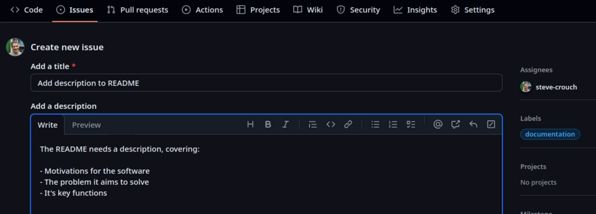
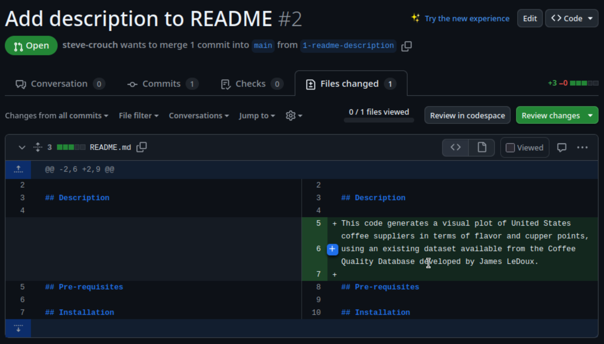
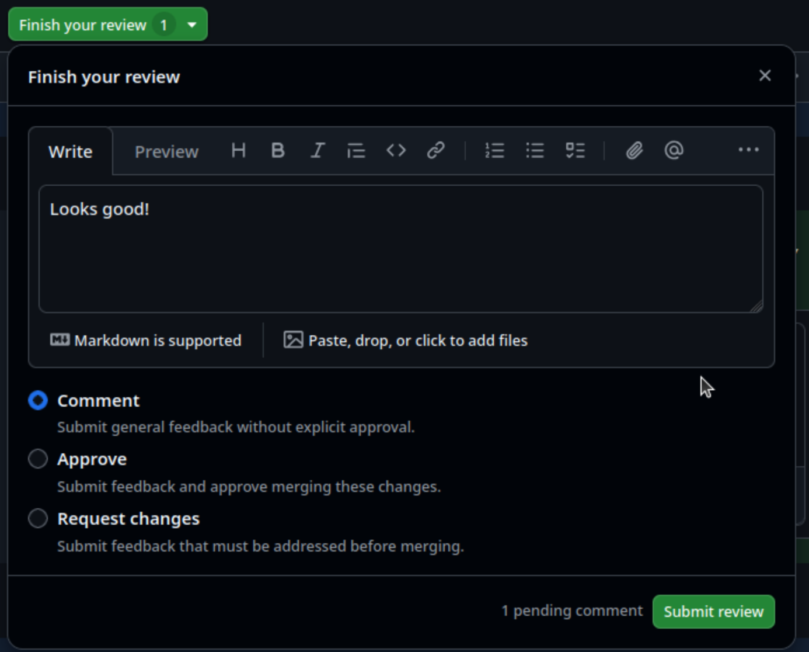

Image 1 of 1: ‘image of the v-model of software development’
Figure 4
Image 1 of 1: ‘image of iterative software development’
Figure 5
Image 1 of 1: ‘simplified diagram of scrum with arrows showing that the product backlog is broken down into sprint backlogs and these are worked on throughout a sprint to create an increment of value’
Image 1 of 1: ‘Diagram depicting a feature branch being created off of a main branch, with its own commits, and those commits then being merged onto the main branch.’
Image 1 of 1: ‘Diagram depicting a feature branch being created off of a main branch, with its own commits, and those commits then being merged onto the main branch.’
Figure 2
Image 1 of 1: ‘Diagram depicting a failed first review of a pull request, subsequent fixes to address the review, and a successful second review and merge to main.’
Figure 3
Image 1 of 1: ‘Adding a new GitHub issue to the group repository for writing a description to the README, ensuring it has a quick summary, is assigned to someone, and has a documentation label’

Figure 4
Image 1 of 1: ‘Comparing changes between feature and main branches to create a pull request, showing the commits to merge and the line-by-line changes between files’
In the Compare changes page that comes up:
Select compare: and select your new branch,
e.g. 123-readme-description You should now see a summary of
the changes between the new branch and the main branch,
i.e. a single commit and the new README content you pushed earlier
Select Create pull request
Figure 5
Image 1 of 1: ‘Add details for pull request before creating it, including a reviewer, label, title, and description’
In the Open a pull request page that appears:
Enter a fitting title, brief description, and label
Select Reviewers and add the GitHub account for the
other group member who will review your pull request
Select Create pull request
Figure 6
Image 1 of 1: ‘Unified view of file changes for a pull request’
Figure 7
Image 1 of 1: ‘Split view of file changes for a pull request’

Figure 8
Image 1 of 1: ‘Add a comment to a pull request’
Figure 9
Image 1 of 1: ‘Final comments and recommendation for the PR’

Figure 10
Image 1 of 1: ‘Observe review feedback in the conversayions tab’
Figure 11
Image 1 of 1: ‘Merge pull request option, visible at the bottom of the conversations tab’
Image 1 of 1: ‘diagram of scrum philosophy, values, pillars and artifacts stacked on top of each other in the shape of a temple’
Figure 2
Image 1 of 1: ‘diagram of scrum philosophy, values, pillars and artifacts stacked on top of each other in the shape of a temple with scrum philosophy highlighted as the foundations’
Figure 3
Image 1 of 1: ‘diagram of scrum philosophy, values, pillars and artifacts stacked on top of each other in the shape of a temple with the steps to the temple highlighted and each step showing a value’
Figure 4
Image 1 of 1: ‘diagram of scrum philosophy, values, pillars and artifacts stacked on top of each other in the shape of a temple with the pillars highlighted’
Figure 5
Image 1 of 1: ‘diagram of scrum philosophy, values, pillars and artifacts stacked on top of each other in the shape of a temple with the roof of the temple highlighted and scrum artifacts written on it’
Figure 6
Image 1 of 1: ‘daigram of an old machine’
By Clerk, Dugald, Sir, 1854-1932. Library of
Congress Catalog, Public Domain